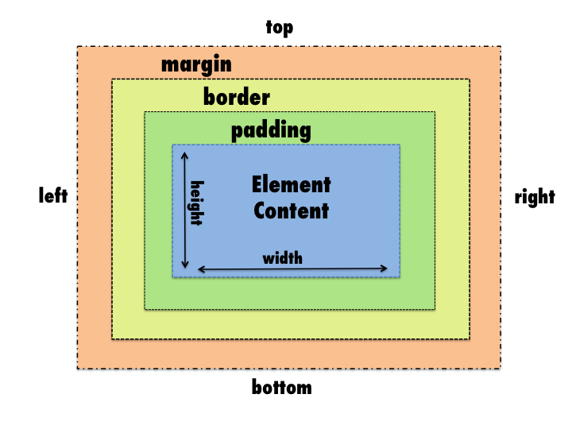

Front End Development Part 1

CSS Box Model
CSS BOX MODEL
Every element in web design is a rectangular box
CSS basic box model
When laying out a document, the browser's rendering engine represents each element as a rectangular box according to the standard CSS basic box model. CSS determines the size, position, and properties (color, background, border size, etc.) of these boxes.
CSS basic box model

Display
The display CSS property defines the display type of an element, which consists of the two basic qualities of how an element generates boxes — the outer display type defining how the box participates in flow layout , and the inner display type defining how the children of the box are laid out.
display: block;
display: block;
display: block;
HTML (Hypertext Markup Language) elements historically were categorized as either "block-level" elements or "inline" elements. By default, a block-level element occupies the entire space of its parent element (container), thereby creating a "block." This article helps to explain what this means.
Browsers typically display the block-level element with a newline both before and after the element. You can visualize them as a stack of boxes.
display: inline;
HTML (Hypertext Markup Language) elements historically were categorized as either "block-level" elements or "inline" elements. Inline elements are those which only occupy the space bounded by the tags defining the element, instead of breaking the flow of the content.
display: inline-block;
Gives us the ability to use vertical padding and margin on inline elements as well as adding width and height.
Width
The width CSS property sets an element's width. By default it sets the width of the content area, but if box-sizing is set to border-box, it sets the width of the border area.
Min/Max Width
min-width
The min-width CSS property sets the minimum width of an element. It prevents the used value of the width property from becoming smaller than the value specified for min-width.
max-width
The max-width CSS property sets the maximum width of an element. It prevents the used value of the width property from becoming larger than the value specified by max-width.
Height
The height CSS property specifies the height of an element. By default, the property defines the height of the content area. If box-sizing is set to border-box, however, it instead determines the height of the border area.
Min/Max Height
min-height
The min-height CSS property sets the minimum height of an element. It prevents the used value of the height property from becoming smaller than the value specified for min-height.
max-height
The max-height CSS property sets the maximum height of an element. It prevents the used value of the height property from becoming larger than the value specified for max-height.
Default Width of Block elements
If you don't declare a width, and the box has static or relative positioning, the width will remain 100% in width and the padding and border will push inwards instead of outward. But if you explicitly set the width of the box to be 100%, the padding will push the box outward as normal.
Margin
The margin CSS property sets the margin area on all four sides of an element. It is a shorthand for margin-top, margin-right, margin-bottom, and margin-left.
Border
The border CSS property sets an element's border. It's a shorthand for border-width, border-style, and border-color.
Padding
The padding CSS property sets the padding area on all four sides of an element. It is a shorthand for padding-top, padding-right, padding-bottom, and padding-left.
Demo
Box Sizing
The box-sizing CSS property defines how the user agent should calculate the total width and height of an element.
Demo
Labs
Resources
Resources
- https://developer.mozilla.org/en-US/docs/Web/CSS/display
- https://developer.mozilla.org/en-US/docs/Web/CSS/CSS_Box_Model/Introduction_to_the_CSS_box_model